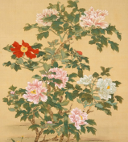

想いを花にのせて
絵画と花を
繋げて学ぶ
昔から花は、人々から愛され、絵画や紋章など広く親しまれてきました。花言葉と、絵画を繋げることにることにより一層絵画への理解が深まり花の観賞を楽しめますように。
『蜀葵』 吉田博
『ひなげし畑』 ゴッホ
花と人の関係
日本では四季の彩りを自然や花から感じ取り、暮らしに生かすと共に、花を楽しんできました。日本の独自の伝統文化である和歌、俳句、生け花、また園芸植物にも日本の四季の草花や木々が関与し、それらの文化と歴史を育んできました。現代、花々は年中入手できますが、四季折々の彩りに目を向け、その伝統を味わってみてはいかがでしょうか。
花を探そう


花の本数に込められた意味
それぞれの花が持つ花言葉とは別に、花束の本数にも意味があります。本数別の花言葉は花の種類に関係ありません。相手の好きな花がわかるなら参考にしてみて下さい。
| 1本 | 「あなたは私の運命の人」 |
| 3本 | 「愛しています」 |
| 4本 | 「一生愛し続けます」 |
| 6本 | 「あなたに夢中です」 |
| 8本 | 「あなたの思いやりや励ましに感謝します」 |
| 9本 | 「いつまでも一緒にいてください」 |
| 11本 | 「あなたは私の最愛の人」 |
| 12本 | 「付き合ってください」「結婚してください」 |
| 40本 | 「永遠の愛を誓います」 |
| 50本 | 「永遠」「偶然の巡り合い」 |
| 99本 | 「永遠の愛」「ずっと好きでした」 |
| 108本 | 「結婚してください」 |
旬の花と花言葉
5月の旬の花

花の名前
花言葉
この文章はダミーです。文字の大きさ、量、字間、行間等を確認するために入れています。この文章はダミーです。文字の大きさ、量、字間、行間等を確認するために入れています。
花の名前
花言葉
この文章はダミーです。文字の大きさ、量、字間、行間等を確認するために入れています。この文章はダミーです。文字の大きさ、量、字間、行間等を確認するために入れています。